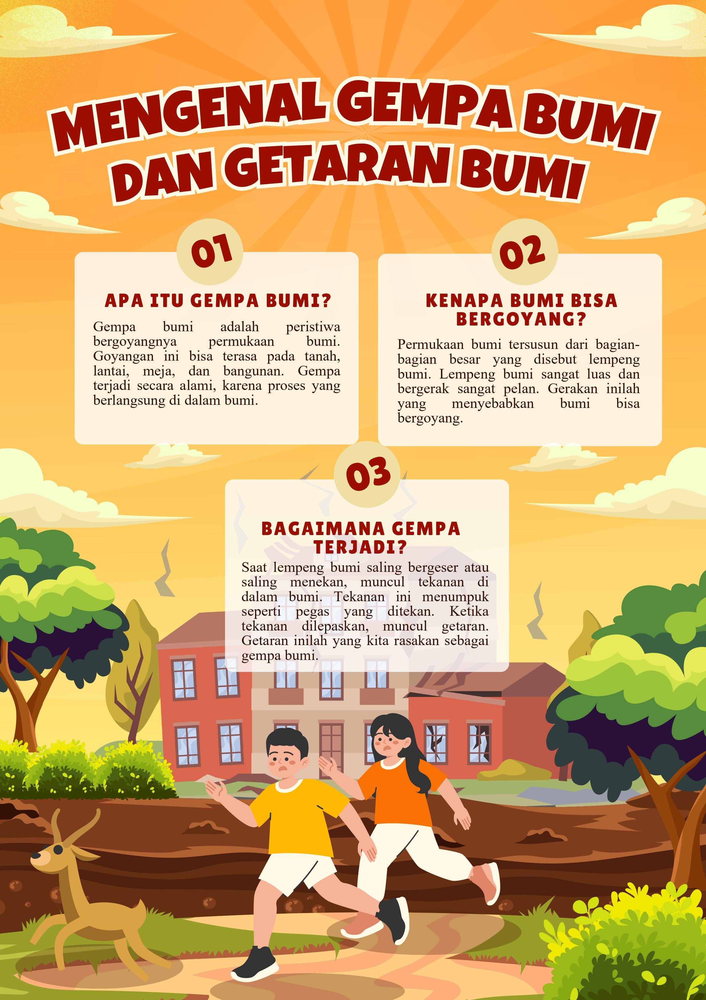
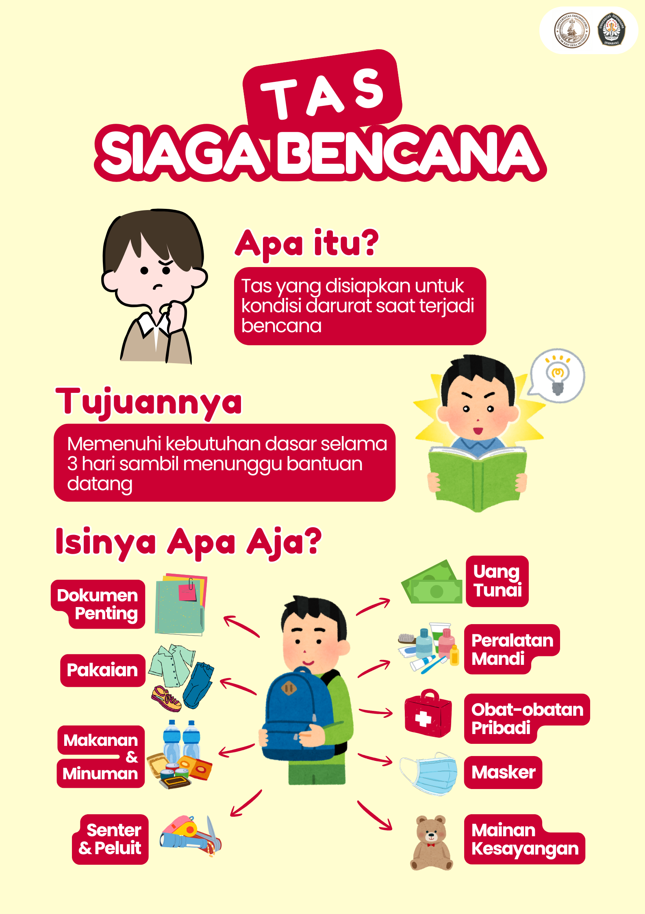
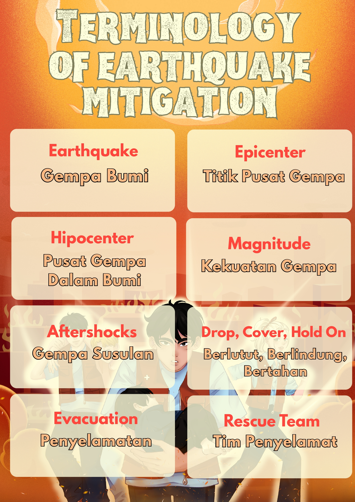
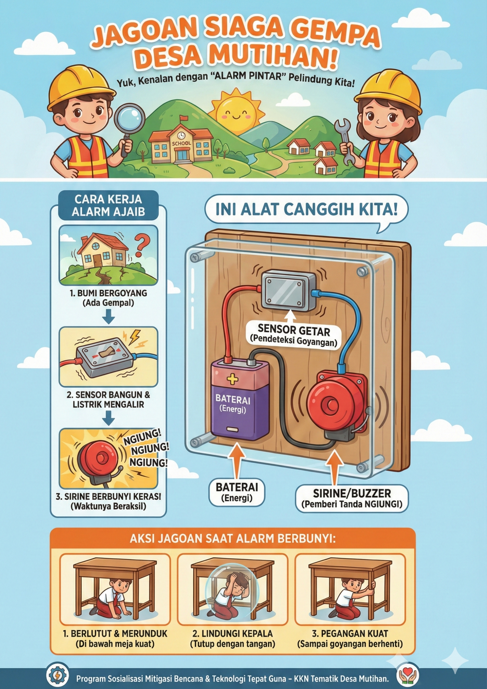
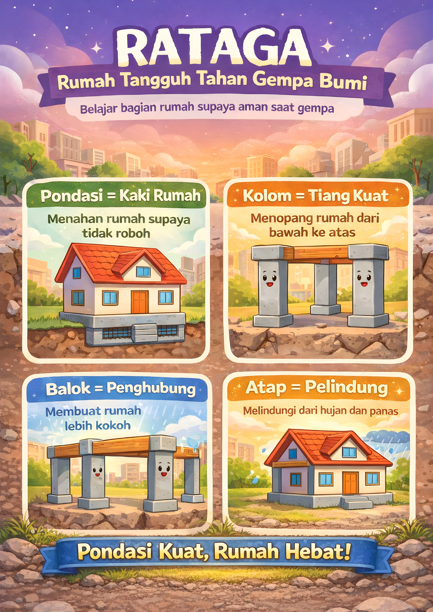
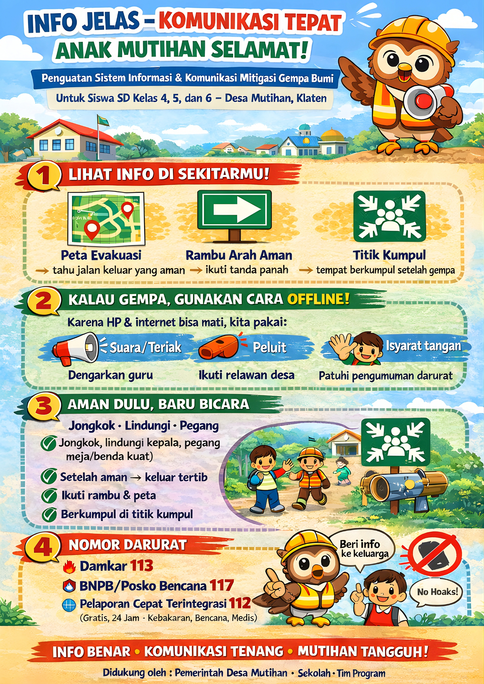

Website Mitigasi Gempa Bumi
Media edukasi kesiapsiagaan bencana untuk masyarakat dan siswa
Apa Itu Gempa Bumi?
Ayo Belajar Siaga Gempa!
Gempa bumi adalah getaran yang terjadi ketika lapisan bumi bergerak. Indonesia sering mengalami gempa karena berada di wilayah pertemuan lempeng bumi. Oleh karena itu, kita perlu belajar bagaimana cara melindungi diri agar tetap aman saat gempa terjadi.
Kenapa Kita Harus Belajar Siaga Gempa?
- Supaya tidak panik saat terjadi gempa
- Supaya tahu cara menyelamatkan diri
- Supaya bisa membantu teman dan keluarga tetap aman
Panduan Saat Terjadi Gempa
Jika terjadi gempa bumi, tetap tenang dan lakukan langkah berikut agar kamu dan teman-teman tetap aman.
1. Jangan Panik
Tetap tenang dan jangan berlari. Gempa biasanya hanya berlangsung beberapa detik.
2. Berlindung di Bawah Meja
Masuk ke bawah meja yang kuat dan lindungi kepala dengan tangan atau tas sekolah.
3. Jauhi Kaca dan Lemari
Hindari benda yang bisa jatuh seperti kaca, lemari, atau rak buku.
4. Keluar Setelah Gempa Berhenti
Keluar bangunan dengan tertib dan ikuti arahan guru atau orang dewasa.
5. Pergi ke Tempat Terbuka
Berkumpul di tempat aman yang jauh dari bangunan dan tiang listrik.
6. Ikuti Informasi Guru atau Petugas
Dengarkan instruksi agar semua orang tetap aman setelah gempa.
Ingat: Tetap tenang, lindungi kepala, dan ikuti jalur evakuasi.
Tas Siaga Bencana
Siapkan tas darurat agar siap jika harus segera mengungsi saat terjadi gempa.
Air & Makanan
Air minum dan makanan instan untuk kebutuhan darurat.

Obat-obatan
Obat pribadi dan perlengkapan P3K sederhana.

Senter
Digunakan saat listrik padam.

Dokumen Penting
Simpan dokumen penting dalam plastik tahan air.
Simpan tas siaga di tempat yang mudah dijangkau agar dapat dibawa dengan cepat saat darurat.
Peta Bahaya dan Risiko Gempa Desa Mutihan
Peta ini menunjukkan tingkat bahaya dan risiko gempa bumi di Desa Mutihan agar masyarakat dan siswa dapat mengenali wilayah yang lebih aman dan wilayah yang perlu lebih waspada saat terjadi gempa.
Peta Bahaya Gempa Bumi
Desa Mutihan

Peta Risiko Gempa Bumi
Desa Mutihan
Warna pada peta menunjukkan daerah yang lebih aman dan daerah yang lebih berisiko saat gempa. Kenali wilayah tempat tinggal dan sekolahmu agar tahu tindakan yang harus dilakukan saat keadaan darurat.
Poster Mitigasi Gempa Bumi
Kumpulan poster edukasi mitigasi gempa bumi yang dibuat oleh anggota KKN untuk membantu siswa memahami cara aman saat gempa.
Apa Itu Gempa Bumi?
Tas Siaga Bencana
Terminologi Mitigasi Gempa
Alarm Gempa Bumi
Rumah Tahan Gempa
Sistem Informasi Mitigasi
Kontak Darurat Gempa Bumi
Hubungi layanan berikut jika terjadi gempa bumi atau keadaan darurat agar bantuan dapat datang dengan cepat.
112
Layanan Darurat Umum
Semua kondisi darurat110
Kepolisian
Keamanan & evakuasi113
Pemadam Kebakaran
Kebakaran & penyelamatan118 / 119
Ambulans & Medis Darurat
Pertolongan medis cepat115
SAR / Basarnas
Pencarian & penyelamatanPesan Penting Saat Gempa
Tetap tenang, lindungi kepala, berlindung di bawah meja yang kuat, dan setelah guncangan berhenti segera menuju area terbuka. Ikuti jalur evakuasi dan arahan petugas.
Our Team
Tim KKN Desa Mutihan yang berkontribusi dalam pembuatan website mitigasi gempa bumi.